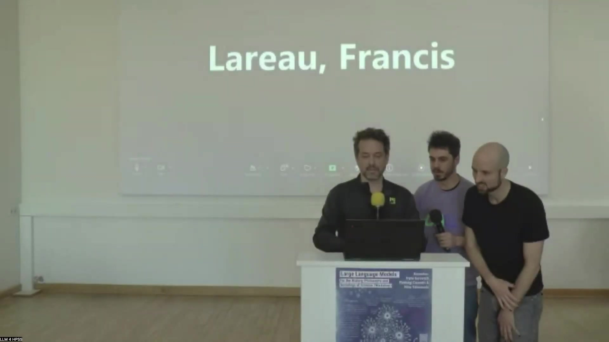

14 Text Granularity and Topic Model Performance
This study investigates the impact of text granularity (titles, abstracts, full-texts) on the performance of two distinct topic modeling approaches, Latent Dirichlet Allocation (LDA) and BERTopic. The research addresses the practical challenge of significant resource requirements for obtaining, preprocessing, and analyzing full-text corpora by comparing topic models derived from different text levels. A corpus of scientific articles in Astrobiology serves as the material. Six topic models…
15 Text Granularity and Topic Model Performance
15.1 Overview
This study investigates the impact of text granularity (titles, abstracts, full-texts) on the performance of two distinct topic modeling approaches: Latent Dirichlet Allocation (LDA) and BERTopic. The research addresses the practical challenge of significant resource requirements for obtaining, preprocessing, and analyzing full-text corpora by comparing topic models derived from different text levels.
A corpus of scientific articles in Astrobiology serves as the material for this study. Six topic models are generated: LDA on titles, abstracts, and full-texts, and BERTopic on titles, abstracts, and full-texts. These models are then analyzed and compared qualitatively and quantitatively using metrics such as Adjusted Rand Index, Topic Diversity, Joint Recall, and Coherence CV.
The qualitative analysis involves comparing topic coherence and the stability of topics across models, referencing a previously established LDA full-text model with 25 topics and 4 thematic clusters. Quantitative results indicate that title-based models generally perform poorly, while abstract models show better coherence and diversity. Full-text models demonstrate superior joint recall.
Specifically, BERTopic Abstract emerges as a strong performer in coherence, and BERTopic Title in diversity, while LDA Fulltext and BERTopic Fulltext excel in joint recall. The study concludes that the optimal choice of text level and topic model depends on specific research objectives. Abstract-based models offer a good balance and consistency with full-text models, while title-based models, despite limitations, can identify robust core topics. The potential for leveraging structural information (titles, abstracts, full-texts) in future models is also discussed.
15.2 Introduction

This presentation is delivered by Francis Lareau, a Postdoctoral Fellow affiliated with the University of Sherbrooke and the University of Quebec in Montreal (UQAM). This work is a comparative study conducted with Christophe Malaterre from the University of Quebec in Montreal.
The study focuses on topic modeling, a technique for extracting themes from a corpus. Topic modeling is recognized as an important tool for analyzing large volumes of scientific literature, especially within the history, philosophy, and sociology of science (HPSS).
A problem arises because existing studies utilize different textual structures for topic modeling, namely titles, abstracts, and full text. Obtaining, preprocessing, and analyzing full-text corpora demand significant resources. This prompts the central research question: Is applying topic modeling to titles or abstracts sufficient, or is full-text analysis necessary?
15.3 Study Design
This study addresses the pressing question of whether analyzing titles or abstracts is sufficient for topic modeling, given the substantial resources needed for full-text corpora acquisition, preprocessing, and analysis. The methodology involves a structured workflow.
First, a corpus of scientific articles is constituted. Second, the distinct title, abstract, and full text sections are identified within this corpus. Third, two different topic modeling approaches, Latent Dirichlet Allocation (LDA) and BERTopic, are applied separately to each of the three identified text levels: titles, abstracts, and full texts.
This process generates a total of six distinct topic models. Finally, these six resulting topic models undergo both qualitative and quantitative analysis and comparison to evaluate their performance across the different text levels.
15.4 Topic Modeling Approaches

The study compares two distinct topic modeling approaches: Latent Dirichlet Allocation (LDA) and BERTopic. Both approaches share fundamental postulates: documents can be represented by numerical vectors, topics are identifiable through linguistic regularities manifested as repetitions, and machine learning facilitates the automatic detection of these regularities.
Latent Dirichlet Allocation (LDA) is characterized as a classical statistical method. It employs a classical vector representation technique based on counting words within documents. In the LDA framework, topics are conceptualized as latent variables that adhere to Dirichlet’s law. A key advantage of LDA is its ability to handle long texts, making it suitable for analysis across titles, abstracts, and full texts.
In contrast, BERTopic is described as a modern, modular approach, developed by Martin Grootendorst. It utilizes an LLM-based vector representation method, originally based on BERT, which gives the approach its name. Topics in BERTopic correspond to topological densities of documents, typically identified using clustering algorithms like HDBSCAN.
Historically, BERTopic did not handle long texts efficiently, but recent advancements have addressed this limitation. For this study, a specific embedding model, Stella EN 1.5B V5, was selected for the BERTopic implementation. This model was chosen based on its high ranking on the Massive Text Embedding Benchmark on Hugging Face and its capacity to handle approximately 131,000 tokens, addressing the long text limitation.
15.5 Material and Qualitative Analysis
The material utilized in this study is an Astrobiology corpus, which was previously subjected to an in-depth topic analysis. This prior analysis, documented in Malaterre & Lareau (2023), resulted in the selection of a full-text LDA model comprising 25 topics. This model serves as a reference for the current comparative study.
The 25 topics of the reference model were analyzed meticulously. This analysis involved examining the most representative words and documents associated with each topic. Based on this examination, each topic was assigned a descriptive label derived from its key terms.
The relationships between topics were then assessed by calculating their mutual correlation, determined by the co-occurrence of topics within documents. Subsequently, a community detection algorithm was applied to the correlation data, identifying four distinct thematic clusters. These clusters were designated with letters (A, B, C, D) and assigned corresponding colors (red, green, yellow, blue) for visualization.
The results of this reference analysis are represented visually as a graph illustrating the correlations between the 25 topics. The graph displays the topic labels and the color variations indicating their thematic clusters. The thickness of the lines connecting topics represents the strength of their correlation, while the size of the circles representing topics indicates their overall presence across all documents in the corpus. This established and analyzed reference model provides a basis for qualitatively comparing the six topic models generated and investigated in the current comparative study.
15.6 Quantitative Metrics

The quantitative analysis compares the six topic models using four specific metrics:
Adjusted Rand Index: This metric assesses the similarity between two different document clusterings. It is corrected for chance, meaning a value of zero corresponds to a random clustering.
Topic Diversity: This measures the proportion of distinct top words utilized to describe the topics within a single topic model. A higher diversity indicates that topics are characterized by different sets of words.
Joint Recall: This evaluates the extent to which the top words collectively represent the documents assigned to each topic. It provides an average measure of document-topic recall, indicating how well the topic’s representative words can retrieve the documents belonging to that topic.
Coherence CV: This evaluates the semantic meaningfulness of the topic’s top words. It is computed as the average of the cosine relative distance between the top words within each topic, where a higher value suggests greater semantic relatedness among the words and thus more coherent topics.
15.7 Adjusted Rand Index Results

The Adjusted Rand Index is employed to quantitatively assess the similarities among the six generated topic models by comparing their document clusterings. A value of zero for this metric signifies a random clustering.
The results indicate that the LDA model trained on titles is the most distinct among all models, as evidenced by low Adjusted Rand Index values, specifically under 0.2, shown in the heatmap comparison.
Conversely, all other models exhibit a better overall match with each other, demonstrating values exceeding 0.2. A notable observation is that the BERTopic models tend to correspond more strongly with each other, with Adjusted Rand Index values generally above 0.35. Furthermore, the BERTopic Abstract model appears to be more central in its similarity profile, showing good correspondence to every other model, with values over 0.30, except for the LDA Title model.
15.8 LDA Model Comparison

A more detailed qualitative analysis focuses on comparing the LDA Full-text model with the LDA Abstract and LDA Title models, using heatmaps that visualize the number of shared documents between topics. A reddish diagonal pattern in these heatmaps signifies a good correspondence between topics across models.
Comparing the LDA Full-text model with the LDA Abstract model (Table A) reveals a good overall fit. This is evident from the prominent reddish diagonal, indicating that topics in one model largely correspond to single topics in the other with a high proportion of shared documents.
However, the analysis also identifies specific topic transformations: three full-text topics disappear entirely in the abstract model (represented by long horizontal dark gray lines), three full-text topics split into multiple topics in the abstract model (short horizontal dark gray lines), and three abstract topics are formed by the merger of multiple full-text topics (short horizontal dark gray lines). Additionally, the LDA Abstract model exhibits one small class containing fewer than 50 documents.
In contrast, the comparison between the LDA Full-text model and the LDA Title model (Table B) indicates a poor overall fit, characterized by substantial reorganization of topics. This is visually represented by numerous vertical and horizontal dark lines in the heatmap, signifying that many full-text topics disappear and many new topics emerge in the title model, with little direct correspondence.
15.9 BERTopic Model Comparison

The qualitative comparison extends to the BERTopic models, assessing their correspondence with the LDA Full-text reference model using heatmaps showing shared documents.
Comparing the LDA Full-text model with the BERTopic Full-text model (Table C) shows an average overall fit. The analysis reveals that 8 topics from the LDA Full-text model disappear, and 6 topics split into multiple topics in the BERTopic Full-text model (indicated on the horizontal axis). On the vertical axis, 5 new topics appear in the BERTopic model, and 1 topic results from the merger of LDA topics. The BERTopic Full-text model also exhibits issues with class size, including 4 small classes and 1 very large class.
The comparison between the LDA Full-text model and the BERTopic Abstract model (Table D) indicates a relatively good overall fit. Four LDA topics disappear, and 6 topics split in the BERTopic Abstract model (horizontal axis). Two new topics appear, and 4 topics result from mergers in the BERTopic Abstract model (vertical axis).
Finally, comparing the LDA Full-text model with the BERTopic Title model (Table E) shows an average overall fit. Seven LDA topics disappear, and 1 topic splits in the BERTopic Title model (horizontal axis). Seven new topics appear, and 1 topic results from a merger in the BERTopic Title model (vertical axis). The BERTopic Title model also presents class size issues, with 3 small classes and 1 large class.
15.10 Comparing Top Words

A qualitative assessment involves comparing the top words associated with selected topics across the different models to understand the nature of the topics generated.
Within the LDA models (Full-text, Abstract, and Title), topics are observed to be relatively well-formed. A robust topic, exemplified by “A radiation spore,” demonstrates good correspondence in its top words across all three LDA models.
Splitting of topics is also observed: the “A life civilization” topic from the full-text model splits across the abstract and title models, which is considered sensible as it relates to a general theme of research in astrobiology. The “B chemistry” topic from the full-text model also splits across the abstract and title models, though this particular split is noted as being more challenging to interpret without deeper analysis. Merging of topics occurs as well, such as the “B amino acid” and “B protein gene RNA” topics from the full-text model merging into a single topic in other models, which is deemed sensible as it forms a more general thematic area.
Comparing the BERTopic models (Full-text, Abstract, and Title) with the LDA Full-text model also reveals relatively well-formed topics across all BERTopic models. The robustness of the “A radiation spore” topic is again observed, appearing consistently across all BERTopic models and the LDA Full-text reference. The “A life civilization” topic is relatively stable across the BERTopic models, although some splitting occurs, leading to narrower topics specifically focused on extraterrestrial life. The “B chemistry” topic also splits across the BERTopic models, resulting in more narrow thematic topics.
15.11 Coherence, Diversity, and Joint Recall Results

Quantitative performance metrics are evaluated for all six topic models across a range of topic numbers, specifically from 5 to 50.
The Coherence CV metric, which assesses the meaningfulness of the topic top words, yields several findings:
Models trained on titles exhibit the worst coherence.
Abstract models demonstrate better coherence compared to full-text models.
Overall, BERTopic models show better coherence than LDA models when applied to abstracts and titles, although this difference becomes less pronounced as the number of topics increases.
Based on this metric, BERTopic Abstract is identified as the clear winner.
Regarding Topic Diversity, which measures the proportion of distinct top words, the results show that diversity generally decreases as the number of topics increases:
Models trained on titles offer the best diversity.
BERTopic models exhibit better diversity than LDA models.
The winner for diversity is BERTopic Title, closely followed by BERTopic Full-text.
The Joint Recall metric evaluates how effectively the top words collectively represent the documents classified within each topic:
Titles yield the worst joint recall.
Full-text models perform better than their abstract and title counterparts.
LDA models generally show better joint recall than BERTopic models.
The winners for Joint Recall are LDA Fulltext and BERTopic Fulltext, with BERTopic Abstract performing very closely behind.
15.12 Model Performance Summary

A summary table consolidates the performance results, offering an overall view of each model’s strengths and weaknesses across various assessment criteria. The models evaluated are:
LDA Full-text (rated 4*)
LDA Abstract (4.5*)
LDA Title (2.5*)
BERTopic Full-text (4.5*)
BERTopic Abstract (4.5*)
BERTopic Title (3*)
The assessment criteria include Overall fit, Top-words quality, Coherence, Diversity, and Joint recall. Performance scores are visually represented using circle icons, where a full black circle signifies the highest score and an empty circle indicates a low score. Red crosses highlight specific problems, such as class imbalance.
The analysis indicates that there is no single absolute best model; the optimal choice is contingent upon the specific research objectives. Different objectives necessitate different model characteristics. For instance, if the primary goal is the discovery of main topics without requiring precise classification of every document, issues like poor recall or large classes might be acceptable. In such a scenario, the BERTopic Full-text model performs well, although it exhibits some class imbalance. The BERTopic Title model, while generally less optimal, is capable of producing some robust topics that are also identified by the other models.
15.13 Discussion and Future Directions
The discussion highlights several key observations and potential future directions. The poor performance observed in title-based models is primarily attributed to the inherent lack of information in titles compared to abstracts or full texts. This limitation can lead to inaccurate classification of documents, although title models are still capable of identifying meaningful core topics.
Full-text models exhibit distinct characteristics depending on the approach. LDA models applied to full text tend to produce topics that are more loosely defined and broader in coverage, potentially capturing transverse themes such as research methods. BERTopic full-text models, on the other hand, may result in some topics being too narrow, leading to poor document coverage, and can suffer from class-size imbalance problems.
Abstract models demonstrate notable consistency, both between the LDA and BERTopic implementations and in their correspondence with the LDA full-text model. A significant finding is the overall robustness of topics, with very similar thematic areas being identified across the board, regardless of the specific model or text level used.
Future research possibilities include exploiting meta-analysis techniques to systematically identify the most robust topics that consistently appear across multiple models and text levels. Another direction involves using relative distance metrics to determine which model is the most central or representative among the set. Furthermore, the study suggests the potential for developing new topic modeling approaches that explicitly leverage the structural information present in documents (i.e., the distinction between full text, abstract, and titles) to extract more meaningful sets of topics or top words.